v4.1 UI · 019ff3 · 019fab · 8/30 Text Authoring · 통합 blueprint
조작 가능한 통합 흐름을 다듬었습니다.
제품 통합은 아직 끝나지 않았습니다.
작성 화면은 원문·구조·결과의 세 단계로 정리했고, 여섯 작성 틀의 설명과 예시, 예시 비원문 계약, PoC 초안 복구를 연결했습니다. 개인공간은 A8의 corridor·삽입선·edge auto-scroll에 이어 A9에서 맨 위·위·아래·맨 아래, 월간 날짜별 Quick add, pointer cancel cleanup, 844×390 내부 scroll과 reload 뒤 compact Undo까지 보완했습니다. standalone의 왼쪽 destination 역할과 공통 Item 편집기, Calendar owner, 공개 저장, export·운영 저장 계약은 아직 남았습니다.
직접 조작 파일은 embedded fixture 기반 독립 시뮬레이터입니다. 실제 운영의 네 saved-plan origin을 다시 읽는 live 앱으로 간주하지 않습니다.
현재 판정UX 충실도 개선 · 조건부 검토
운영 전환보류
정본 S1–S8완료 3 · 부분 3 · 미구현 2
현재 최고 증거E4 · 브라우저 자동화
실기 / 관찰 사용자미실행 / 0명
INTEGRATION FLOW
세 결과물이 만나는 지점
v4.1은 개인 정리·기간 화면, 개발1은 기존 saved Flow 상세 기반, 개발2는 원문 작성과 명시적 저장 입구를 맡습니다. PoC shadow state는 운영 저장 구조가 아니라 이 연결을 검토하기 위한 임시 계층입니다.
구현부분 연결미구현
정본과 현재 범위가 충돌하는 지점정본 S3는 P0 시나리오지만, 현재 구현 인계는 공개 저장을 P2로 제외했습니다. 이 충돌을 해소하기 전에는 P0 통합 gate를 통과했다고 판정할 수 없습니다.
DECISION TRACE
이전 결정과 현재 화면을 대조했습니다
아래 표는 대표 결정 묶음입니다. v4.1·개발 1·개발 2의 원자 요구 전체와 대체된 결정 이력은 세 결과물 요구사항 추적 보고서에서 원출처·현재 증거와 함께 확인할 수 있습니다.
전체 열린 primary gap81
V4113
개발 122
개발 246
A9 4차 판정V41-028·V41-065·V41-070은 새로 충족했습니다. V41-066.3의 자동 pointer cancel cleanup도 충족으로 올렸지만 부모 V41-066은 실제 Android/iOS touch 증거가 없어 부분으로 유지합니다. 현재 primary는 충족 69·부분 54·미충족 24·결정 필요 3이며, V41은 충족 53·부분 10·미충족 3·의도적 변경 6·제외 6입니다.
| 근거 | 당시 상태 | 회수한 요구 | 현재 PoC 판정 |
|---|---|---|---|
| 개인공간 v4.1spec · UI HTML · QA | 확정 | 흰색·회색·teal, 구분선 중심의 평면형 목록카드와 장식보다 정보 위계와 빠른 조작을 우선합니다. | 충족React와 독립 HTML을 같은 방향으로 정리했습니다. |
| 개인공간 v4.1이동 패널 계약 | 확정 | 최대 300px 패널과 오른쪽 168px 조작 통로항목·핸들은 계속 보이고 목록은 한 열로 스크롤돼야 합니다. | 부분React는 폭·safe inset, 오른쪽 corridor, before/after 삽입선과 edge auto-scroll을 연결했습니다. standalone은 목적지가 중앙 dialog라 같은 좌우 공간 계약이 아직 아닙니다. |
| 개인공간 v4.1반응형·입력 규칙 | 확정 | 48px 조작 영역, 350ms 길게 누르기, 8px 취소, 844×390 모바일 처리 | 부분네 방향 순서 이동, 월간 점유·빈 날짜별 Quick add, pointer cancel cleanup, 844×390 dialog/panel 내부 scroll과 reload 뒤 compact Undo를 확인했습니다. standalone의 왼쪽 destination 역할, 200% zoom·실제 OS·screen reader 검증은 남았습니다. |
| 세션 019ff3개발1 실행 기반 | 확정 | 폴더·기간 IA는 기존 MyPlanExecutionSurface에 붙입니다.Flow Map을 별도 사용자 plan 유형으로 만들지 않고 origin 차이는 capability로 처리합니다. | 충족기존 Flow 상세를 no-write projection으로 재사용합니다. |
| 세션 019ff3공통 Item 편집 | 확정 | 제목·개인 메모·원래 날짜·특정 날짜·날짜 미정을 한 편집 흐름으로 다룹니다. | 미연결현재 상세는 이동·완료 중심입니다. 운영 writer를 우회하지 않도록 이번 수정에서 제외했습니다. |
| 세션 019fabText Authoring 기본 방향 | 확정 | 빈 메모에서 시작하고, 원문 → 구조 → 결과로 확인합니다.일반 문장을 자동으로 Item으로 확정하지 않습니다. | 충족모바일 세 단계와 원문 행 lineage를 연결했습니다. |
| 세션 019fab반응형 편집기 | 제안 | 모바일은 입력·구조·결과에 집중하고, 1024는 38/62, 1440은 3-pane으로 확장합니다. | 부분세 단계 전환은 구현했습니다. 데스크톱 비율과 3-pane은 현재 통합 shell에 맞춘 2열입니다. |
| 8/30 Text Authoring후속 PoC 결정 | 확정 | 빈 편집기에서 + → 작성 틀로 시작 → 6개 틀을 고릅니다.선택 한 번이 정확한 빈 scaffold를 한 transaction으로 삽입합니다. | 충족여섯 틀과 교체 가능한 설명 계약을 연결했습니다. |
| 8/30 Text Authoring예시 경계 | 확정 | 틀 이름·설명·예시는 안내용입니다.명시적으로 materialize하지 않는 한 source text가 되지 않습니다. | 충족선택 전·후 예시를 보여 주되 저장 원문과 분리했습니다. |
| 8/30 Text Authoring초안·Undo 계약 | 확정 | 초안을 복구하고 틀 삽입은 Undo 한 번으로 되돌립니다. | 충족React와 독립 HTML 모두 초안을 전용 key에서 복구합니다. 두 화면의 1단계 Ctrl+Z·Ctrl+Shift+Z/Y도 확인했고, 삽입 이력은 custom history로 관리합니다. |
| 세션 019fab구조 수정 UX | 제안 | 원문을 훼손하지 않는 correction-only outline에서 구조를 고칩니다. | 미연결현재 구조 단계는 확인과 오류 표시만 제공합니다. |
| 통합 blueprint격리·identity | 확정 | exact query, 전용 prefix, savedCopyId + flowId + itemId, fail-closed, no-write projection | 충족운영 key·writer를 건드리지 않는 자동 근거가 있습니다. |
| 통합 blueprint화면 기준 | 확정 | v4.1 UI를 통합 PoC의 화면 기반으로 삼습니다. | 부분PoC는 teal로 맞췄지만 운영 main의 cobalt token과 충돌합니다. 제품 token 결정이 필요합니다. |
| 통합 blueprint정본 S3 | 확정 P0 | 공개 Flow 저장 receipt에서 개인 이름·폴더 지정까지 연결합니다. | 미구현현재 구현 인계의 P2 제외 범위와 충돌합니다. |
| 통합 blueprint현재 구현 인계 | 보류 | 실제 Calendar owner와 개인 수정·preview·export를 운영 command에 연결합니다. | 미구현PoC 저장 경계를 넓히지 않았습니다. |
자동 prose → Item 해석은 넣지 않았습니다.초기 여정 예시와 후속 Text Authoring 경계가 충돌합니다. 후속 결정은 일반 문장을 개인 메모로 보존하고, 사용자가 확인한 때만 Flow 구조로 materialize하는 쪽입니다.
EVALUATION MODEL
평가 기준과 증거 등급
점수 평균은 쓰지 않습니다. 치명적 결함이 다른 항목에 묻힐 수 있기 때문입니다. 항목마다 충족·부분·미충족을 판정하고, 확인 범위는 E등급으로 따로 표시합니다.
E0미확인주장만 있고 근거가 없음
E1설계 근거정본 spec·plan·수용 기준 존재
E2정적 구현 근거코드·fixture·테스트 코드 확인
E3자동 QA현재 HEAD에서 모델·저장·회귀·build 실행
E4브라우저 자동화실제 브라우저 엔진, 저장 경계, console/page error, viewport 확인
E5-D실제 기기Android Chrome·iOS Safari에서 직접 수행
E5-U관찰 사용자목표 사용자가 관찰 조건에서 과업 수행
exact-query만 PoC로 들어가고 기본 /my와 /flows/new는 유지되는가.
네 origin이 중복 없이 투영되고 savedCopyId + flowId + itemId로 구분되는가.
PoC prefix 밖 쓰기와 기존 writer 호출이 0이고 운영 값이 byte 단위로 같은가.
충족E4성공만 반영되고 no-op·취소·오류는 0 mutation이며 Undo·reload가 정확한가.
충족E4폴더·기간·QuickItem·이동·완료가 날짜·폴더·원본 불변 조건을 지키는가.
충족E4raw text·lineage, React PoC 초안과 receipt 요약을 보존합니다. 부분 해석·correction-only outline, revision identity와 필드별 fidelity 정책은 남았습니다.
부분E4기존 상세는 no-write로 재사용하지만 실제 Calendar·편집·보관·export owner와는 이어지지 않았다.
부분E4필수 5개 viewport와 844×300 reduced-motion 조건에서 React의 DATE drop·Undo·trusted mouse-wheel 취소를 확인했습니다. React와 독립 HTML은 맨 위·위·아래·맨 아래를 같은 reorder transition에 연결했고, 월간 날짜별 Quick add·pointer cancel cleanup·844×390 내부 scroll도 닫았습니다. 200% browser zoom·실제 OS 제스처·screen reader는 미실행입니다.
부분E4자동 근거는 있으나 실제 기기·관찰 사용자·owner ADR·migration·rollback 결정이 남아 있다.
부분E4CANONICAL S1–S8
정본 시나리오 판정
개인공간 E2E의 테스트 이름을 그대로 세지 않고, 통합 spec의 행동과 보존 조건으로 다시 대조했습니다.
메모 → 개인 Flow → 개인공간
원문·구조·lineage·receipt를 한 번에 저장하고 개인공간 상세로 열며 reload 뒤에도 복구됩니다.
완료E4불완전 원문 → 수정·날짜 미정 → 복구
잘못된 날짜·취소·Escape·저장 실패를 차단하고 raw text와 PoC 초안을 reload 뒤 복구합니다. 부분 해석 결과를 correction-only outline에서 고쳐 날짜 미정으로 확정하는 흐름은 남았습니다.
부분E4공개 Flow 저장 → 개인 이름·폴더
이미 저장된 공개 출처는 읽지만, 공개 화면의 저장 receipt에서 개인 이름·폴더 지정까지 잇는 새 command가 없습니다.
미구현E0QuickItem → 날짜·폴더 → Undo
빠른 할 일을 만들고 날짜와 폴더를 독립적으로 옮긴 뒤 한 번의 Undo로 직전 성공 상태를 복구합니다.
완료E4Flow 폴더 → Item 실행일
Flow Item은 부모 폴더를 상속하고 Item 하나의 개인 실행일만 바뀝니다. 원본 일정·순서·Flow 소속은 유지됩니다.
완료E4모바일 이동 → 순서 → 시간순 복귀
React와 독립 HTML은 drag·길게 누르기·메뉴·키보드 및 맨 위·위·아래·맨 아래를 같은 transition에 연결했습니다. 오른쪽 corridor·삽입선·edge auto-scroll·DATE drop, pointer cancel cleanup, 월간 날짜별 Quick add와 mutation 0 취소 경계를 자동화로 확인했습니다. 독립 HTML의 왼쪽 destination 역할과 실제 기기 검증은 남았습니다.
부분E4오늘 완료 → 상세·Calendar → 다시 열기
오늘·Flow 상세·기간 보기의 PoC shadow 완료 상태는 일치합니다. 실제 /calendar와 운영 execution owner 연결은 확인하지 못했습니다.
부분E4개인 수정 → 미리보기 → 내보내기
현재 상세는 no-write projection이며 edit/export를 의도적으로 숨겼습니다. preview·export receipt 연결 전체가 남았습니다.
미구현E0P0 gate는 미충족입니다.P0 시나리오 S1·S2·S3·S5·S7 중 완료 2, 부분 2, 미구현 1입니다. 핵심 루프를 직접 검토할 수 있다는 뜻이지, 정본 통합 범위를 끝냈다는 뜻은 아닙니다.
EXECUTED EVIDENCE
실제로 다시 실행한 검증
A9 표적 모델, React+standalone 기능 브라우저, 전체 회귀와 production build를 현재 checkout에서 다시 실행했습니다. 서로 겹치는 개수는 합산하지 않으며 verification manifest를 실행 수의 정본으로 사용합니다.
PoC 모델·계약76 / 76A9 변경 뒤 표적 묶음
현재 standalone 모델30 / 30월간·네 방향 이동 계약 포함
전체 npm test1,561 / 1,561A9 변경 뒤 전체 회귀
production build18 / 18직전 A8 build 기준선
현재 독립 HTML 표적 브라우저file URL 조작·정확한 저장 key·초안 reload·손상 payload fail-closed·48×48 handle drag·Alt 이동·저장 차단 fallback·script-disabled 안내와 5개 viewport를 parity 변경 뒤 다시 확인했습니다.6 / 6
통합 관련 브라우저 묶음7개 suite에서 React 개인공간·authoring·standalone·보고서를 함께 실행했습니다. 두 기능 suite 27건에는 네 방향 이동·월간 날짜별 Quick·pointer cancel·844×390 내부 scroll이 포함됩니다.37 / 37
844×390 반복standalone의 정확한 빈 날짜 28개, 점유·빈 날짜별 QuickItem, dialog 내부 scroll을 3회 반복했습니다.3 / 3
전체 5개 viewport 묶음390×844, 375×812, 844×390, 1024×768, 1440×900에서 가로 overflow·console error·page error·가려진 핵심 행동이 모두 0이었습니다.문제 0
844×300 특수 상호작용reduced-motion에서 화면 밖 DATE 대상으로 자동 스크롤해 drop한 뒤 Undo했고, 활성 이동 중 trusted mouse-wheel 입력이 mutation 없이 취소되는 것도 확인했습니다. DATE drop·Undo 핵심 시나리오는 10회 연속 반복했습니다.10 / 10
저장 API 경계현재 통합 브라우저와 모델 검증에서 PoC 전용 prefix 밖 setItem·removeItem과 clear 호출은 0이고 운영 sentinel은 byte 단위로 같았습니다.변경 0
정본 단일 파일검토본과 Android 전달용 별칭은 byte 동일. 각 137,554 bytes, SHA-256
94FCE41B5D843ED36A86861D83D84B8C95051642D9C5F76217744B1283B3977D, 외부 CSS/JS 요청 0.동일의존성 보안 감사
npm.cmd run security:audit는 기존 의존성의 browserslist 고위험 1건과 postcss-selector-parser 저위험 1건을 보고했습니다. 기능 검증 성공과 분리하며, 이 단계에서는 자동 수정하지 않았습니다.FAIL · 2건FIDELITY CHANGES
확정 근거가 있는 UX 결함을 고쳤습니다
기능 수를 늘리기보다 이전 산출물과 현재 화면이 어긋난 지점을 먼저 손봤습니다. 운영 schema와 기존 writer는 그대로 두고, PoC 전용 화면·상태·단일 파일만 바꿨습니다.
모바일 탭과 단계별 주 행동을 분리했습니다. 구조 단계에는 원문 행 근거를, 결과 단계에는 Todo·날짜 목록을 보여 줍니다.
기본은 닫힌 + 작성 틀 진입입니다. 여섯 틀에 용도 설명과 완성 예시를 붙였고, 예시는 원문에 들어가지 않는다는 경계를 표시했습니다.
독립 HTML도 작성 중 원문과 선택한 틀을 새 전용 draft key에 저장하고 reload 뒤 복원합니다. 손상 payload는 빈 안전 상태로 차단하며 운영 bytes는 건드리지 않습니다.
상단 UI를 가리던 폭을 줄이고 조작 통로를 남겼습니다. 이동 대상은 한 열로 스크롤되며 헤더 offset 아래에서 시작합니다.
오른쪽 corridor, before/after 삽입선, edge auto-scroll, Chromium DATE drop에 이어 네 방향 순서 이동·월간 날짜별 Quick add·pointer cancel ghost/강조/상태/RAF cleanup·844×390 내부 scroll을 같은 transition 경계로 묶었습니다. standalone 좌측 destination의 제품 역할은 A0에서 결정합니다.
blue 카드 중심 화면을 흰색·회색·teal, 구분선 중심으로 바꿨습니다. 작성 틀 설명·예시, 48px 입력 영역과 844×390 상태 노출도 보정했습니다.
행 전체가 아니라 전용 손잡이만 drag를 시작하고 행 본문은 세로 스크롤을 유지합니다. 손잡이 drag·메뉴·Alt+↑/↓가 같은 범위의 reorder transition과 저장 결과를 사용합니다.
read model이 보존하던 description과 source timing을 view model과 상세 화면에서도 읽을 수 있게 했습니다. 운영 메모 writer는 호출하지 않습니다.
독립 HTML의 상태와 초안 전용 key를 함께 snapshot하고 삭제 실패 시 둘 다 되돌립니다. 손상된 초안은 작성 화면에 주입하지 않고 안전한 빈 상태로 차단합니다.
React와 독립 HTML에서 Ctrl+Z로 삽입 전체를 되돌리고 Ctrl+Shift+Z 또는 Y로 복원합니다. 실제 브라우저 키 입력으로 확인했습니다.
항목 수, 할 일·날짜 보기 artifact, 날짜 범위, 원문·출처 보존 상태를 완료 receipt에 표시합니다.
작성 화면 · 390×844
이전에는 두 단계와 이름만 있는 틀 버튼이 한 화면에 밀집했습니다. 지금은 원문 단계의 + 작성 틀 진입, 설명·예시, 구조·결과 전환과 초안 복구 상태를 구분합니다.
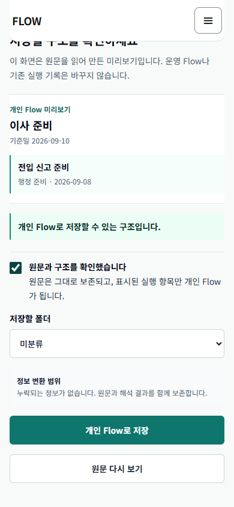
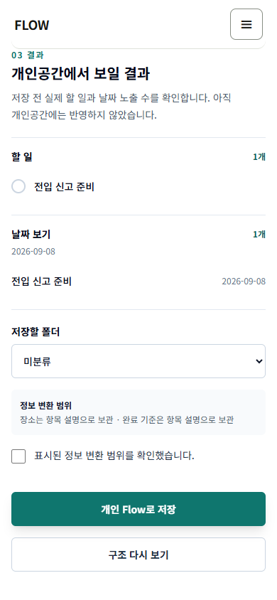
이동 패널 · 390×844
이전 패널은 화면 대부분을 덮어 원래 항목과 이동 맥락을 보기 어려웠습니다. 현재는 오른쪽 조작 통로와 원래 행을 남깁니다.
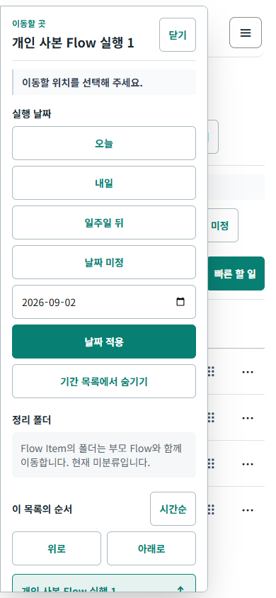
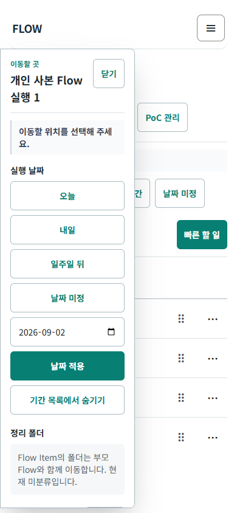
독립 HTML · 844×390
이전에는 landscape에서 desktop rail과 카드가 겹치고 상태가 숨었습니다. 현재는 모바일 landscape 기준으로 탐색·상태·핵심 행동을 한 화면 안에 둡니다.
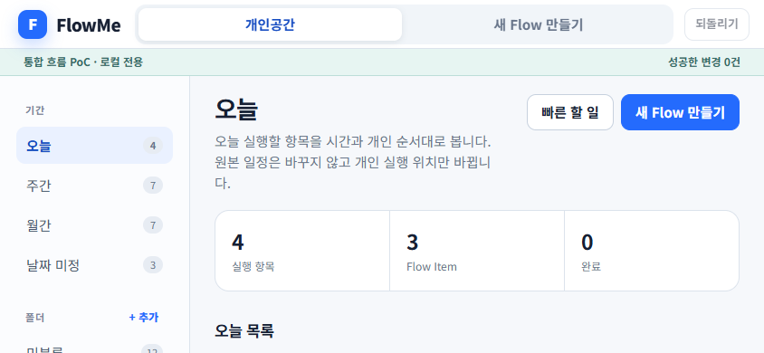
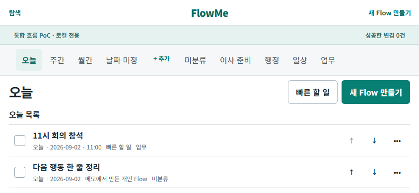
BROWSER VIEWPORTS
다섯 화면 크기 평가
Chrome 기반 자동화에서 다섯 화면 모두 가로 overflow·console error·page error·가려진 핵심 행동이 0이었습니다. 아래 캡처는 실제 Android Chrome·iOS Safari 사진이나 관찰 사용자 증거가 아닙니다.
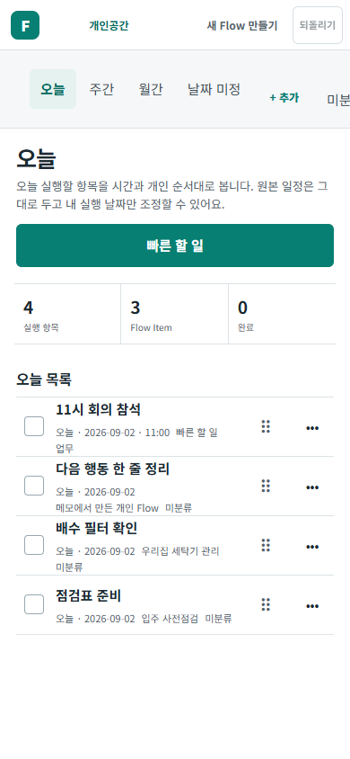
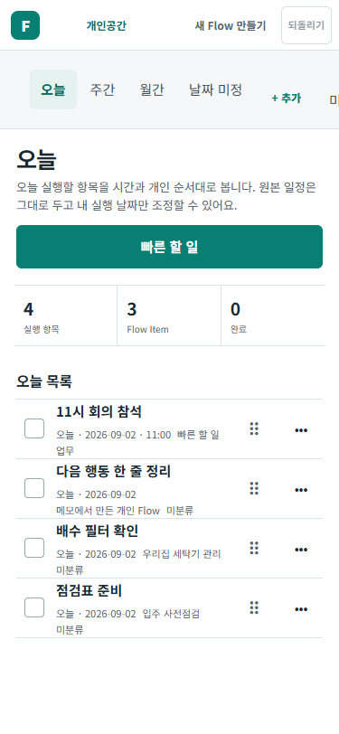
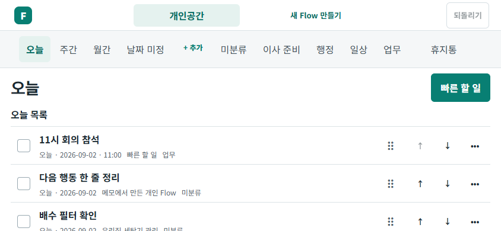
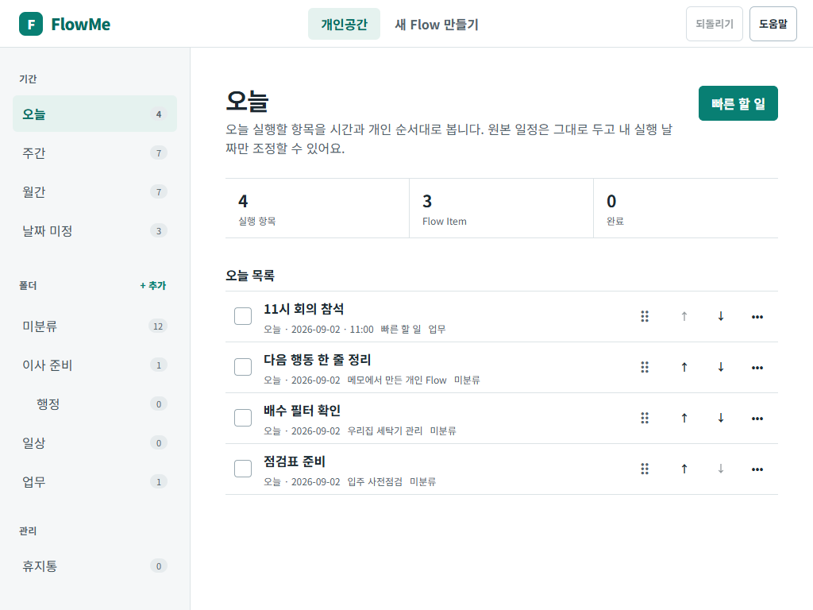
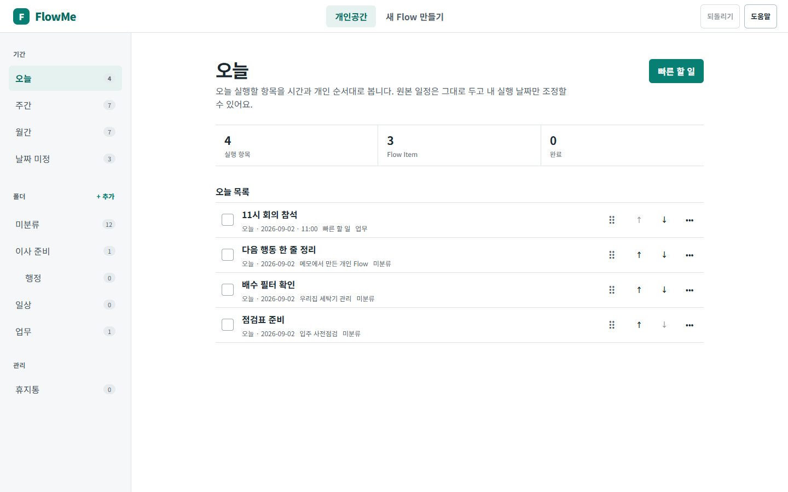
DATA BOUNDARY
운영 데이터를 건드리지 않은 증거
PoC는 기존 Flow를 읽어 투영하고, 바뀌는 값은 전용 shadow state에만 기록합니다. 단일 파일도 같은 원칙을 따릅니다.
허용된 쓰기
flow:poc:personal-workspace:v1:*
- versioned PoC snapshot
- 폴더·QuickItem·ExecutionPlacement·TimelineOrder
- shadow completion·Undo snapshot·authoring receipt
- 작성 중인 PoC authoring draft
금지된 쓰기
- 기본
/my와 운영 key/schema 변경 - 기존 완료·메모·날짜·보관·export writer 호출
localStorage.clear()- 지원하지 않는 origin·손상 payload의 fail-open
- 원본 dirty worktree의 수정·stage·정리
허용 prefix 밖 변경 0건현재 통합 브라우저와 모델 시나리오는 PoC 상태·초안 전용 key만 썼고 운영 sentinel을 byte-for-byte 보존했으며
clear()를 호출하지 않았습니다. 이는 격리된 자동 테스트 fixture·browser context의 증거이며 사용자의 실제 브라우저 profile이나 운영 backend를 직접 검사했다는 뜻은 아닙니다.DEVICE EVIDENCE
자동화와 실기 상태
사용자가 올린 화면은 Android 파일 미리보기에서 본 빈 본문입니다. 844×300·reduced-motion 자동화가 통과했어도 실제 기기·200% zoom·screen reader 검증을 대신하지 않습니다.
상단 껍데기만 보이고 JavaScript 앱이 시작되지 않았습니다.
localStorage가 막히면 임시 메모리로 조작하고, JavaScript가 막히면 다운로드 후 Chrome에서 열라는 안내를 표시합니다.
브라우저 확대와 보조기술을 별도로 확인하고, 재전달한 파일을 실제 기기에서 열어 저장·reload·키보드·회전·길게 누르기를 수행해야 합니다.
현재 별도 검증 판정: 미실행200% browser zoom, Android Chrome, iOS Safari, screen reader는 실행하지 않았습니다. 브라우저 자동화에서 file URL·storage denial·script-disabled fallback과 844×300 상호작용을 재현해도 E5-D나 보조기술 근거로 올라가지 않습니다.
PRIORITIZED BACKLOG
남은 결함과 다음 작업을 분리했습니다
화면에서 바로 고칠 수 있는 결함, 운영 owner 결정이 필요한 연결, 실제 환경에서만 얻을 수 있는 증거를 같은 완료 목록에 섞지 않았습니다.
S3 공개 Flow 저장 command와 S7 실제 /calendar execution owner, composite transaction·rollback을 결정하고 연결합니다.
제품 결정identity·schema·migration·dual read·rollback을 승인하기 전에는 PoC snapshot을 운영 저장소로 옮기지 않습니다.
아키텍처correction-only outline과 제목·개인 메모·원래 날짜·특정 날짜·날짜 미정 editor를 이번 통합 gate에 넣을지 정합니다. 기존 운영 editor에 위임할지 shadow field를 늘릴지도 함께 결정합니다.
범위 결정v4.1 teal과 운영 main cobalt 중 제품 token을 정하고, 844×390에서 React workspace·Authoring·독립 HTML이 같은 화면 문법을 쓸지 결정합니다.
디자인 결정네 방향 순서 이동·월간 날짜별 add·cleanup은 닫았습니다. 중앙 dialog를 v4.1의 왼쪽 destination product surface로 바꿀지 fixture-only로 둘지 A0에서 결정하고 선택 범위만 다시 대조합니다.
제품 결정S8의 개인 편집, 결과 미리보기와 export receipt는 no-write 상세에 아직 연결되지 않았습니다.
미구현200% browser zoom과 screen reader를 확인하고 Android Chrome·iOS Safari에서 저장·reload·회전·키보드·길게 누르기를 수행한 뒤, 목표 사용자의 과업 수행을 별도 기록합니다. 현재 관찰 사용자는 0명입니다.
미실행PRODUCTIZATION GATES
다음 구현 전에 정할 것
PoC snapshot을 운영 schema로 옮기기 전, owner·identity·복구 계약을 먼저 문서로 승인해야 합니다.
명령 소유권과 composite transaction
날짜·완료·폴더의 운영 owner, Authoring 저장과 membership의 전부 성공·전부 rollback, 다중 탭·멱등 재시도를 정합니다.
identity·schema·migration·rollback
영속 savedCopyId, 반복 occurrence, 기존 dateOverrides와 orderOverride의 이관·dual read·rollback을 정합니다.
Authoring document·fidelity
document/revision/handoff ID, 원문 수정 수명주기, correction-only outline과 반복·시간·장소·자료의 필드별 보존 정책을 정합니다. PoC 초안 복구 자체는 구현됐습니다.
지금 하지 않는 일기본
/my 교체, 운영 migration, PoC completion·placement의 이중 기록, fingerprint ID의 운영 확정, Text Authoring 전체 병합, commit·push·PR·배포는 이번 검증 범위 밖입니다.DIRECT REVIEW
직접 조작하고 의견 남기기
다섯 과업을 수행한 뒤 결과를 복사해 이 Codex 작업에 붙여 주세요. 체크와 메모는 파일이나 운영 데이터에 저장되지 않습니다.
PUBLICATION LEDGER
게시와 외부 증거 상태
commit미진행
push미진행
PR미진행
Preview미진행
Production미진행
관찰 사용자0명
근거 기준: 최신 origin/main에서 분기한 격리 worktree의 현재 코드와 2026-09-02 재실행 결과. 원본 dirty worktree는 읽기만 했습니다. PoC 임시 기본값은 영구 제품 정책이나 운영 schema 승인이 아닙니다.